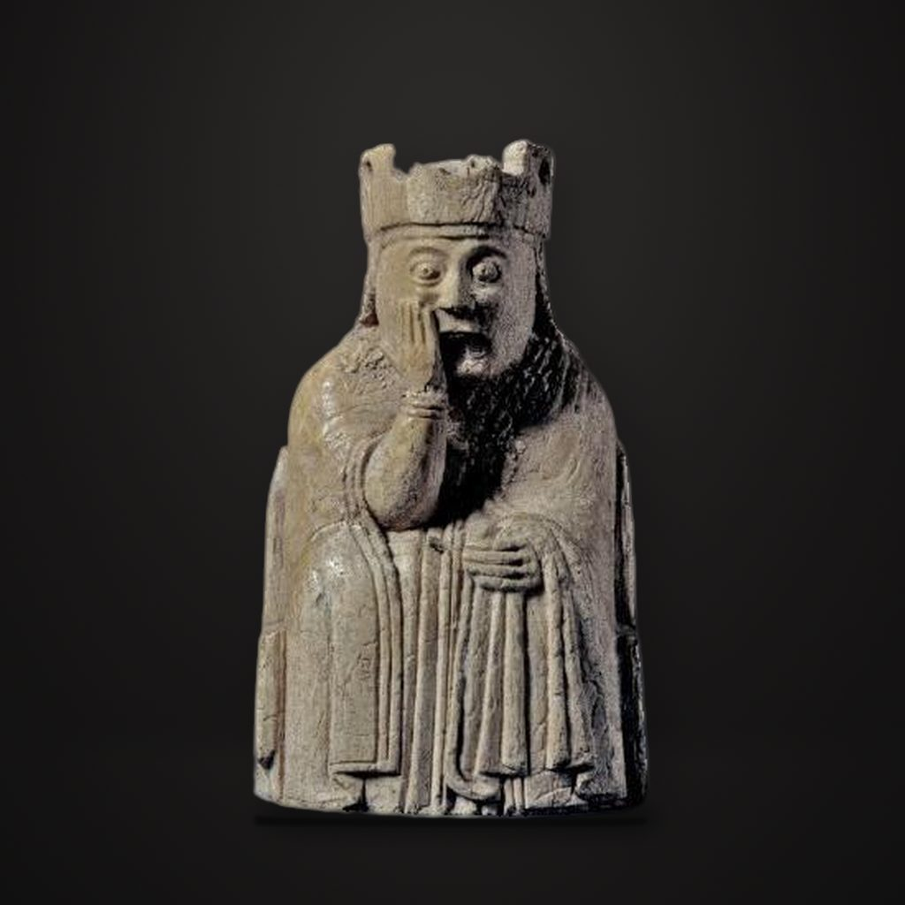

路易斯棋子：王后
斯堪的納維亞（可能是挪威） · 1150—1200年
The Lewis Chessmen: queen
解說節錄
這位王后坐在寶座上，右手托著臉頰；另一隻手放在膝上，拿著一塊布，可能是面紗。她頭上的王冠，已經有了損傷。
這是路易斯棋子中的一枚王后，用海象牙雕成，只有八公分高，大英博物館把它定在一一五零年到一二零零年，早期的風格研究，對年代的判斷也不完全相同。
— 國語講稿 · Artvery
完整解說約 3 分鐘，在 Artvery App 裡收聽。國語、粵語、內地普通話三種語音，館內對準作品即可辨識播放。
即將上架 App Store
App 即將上架，敬請期待。上架後免費下載，每座博物館單獨購買，一次購買永久使用。
作品資訊
- 文化
- 斯堪的納維亞（可能是挪威）
- 年代
- 1150—1200年
- 位置
- 大英博物館 · 不列顛與歐洲展廳
- 館藏編號
- 1831,1101.85
大英博物館參觀攻略：必看名作與路線 · 大英博物館中文語音導覽